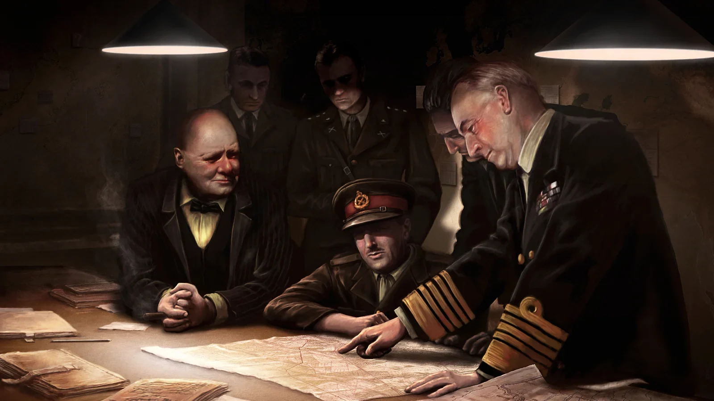
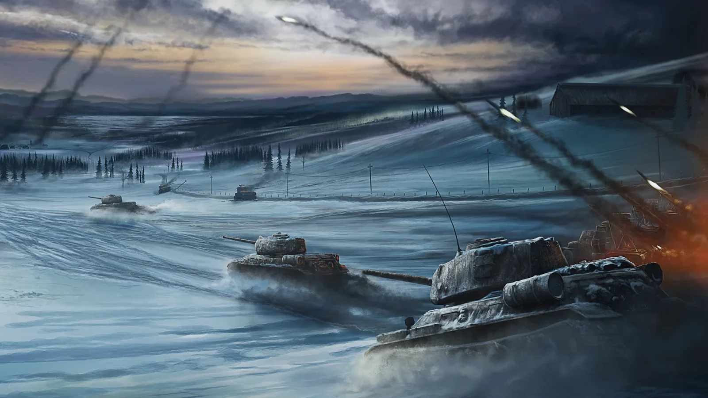
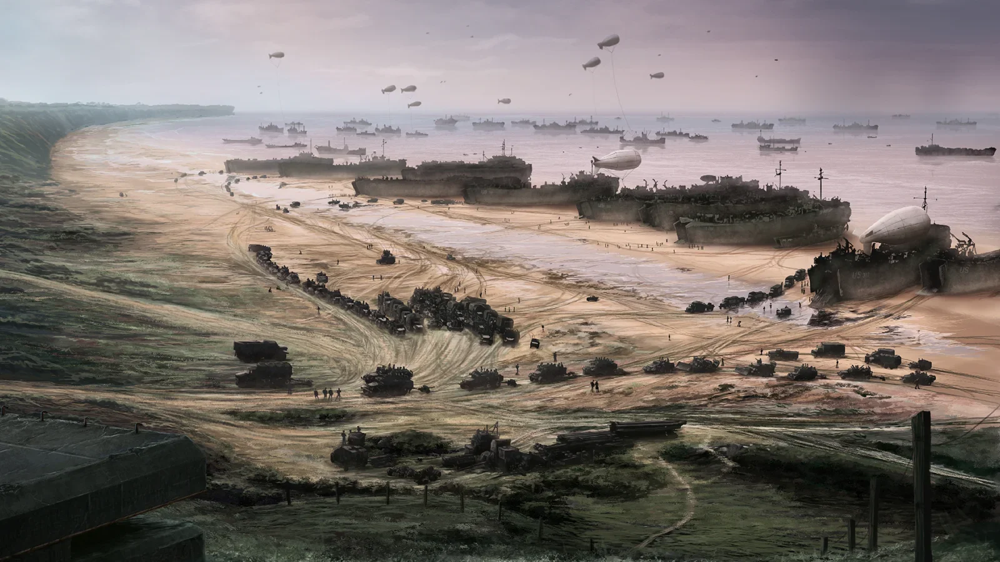

Paradox Interactive 终极二战策略游戏 · 从零开始征服世界
三个板块循序渐进，手把手教你玩转钢铁雄心4
这一板块写给从未接触过P社游戏的纯新手。目标：认得清按钮，按得对快捷键。
| 分类 | 快捷键 | 功能说明 |
|---|---|---|
| 地图控制 | WASD 或方向键 | 移动地图视角 |
| 滚轮 | 缩放地图 | |
| Ctrl + 滚轮 | 快速缩放 | |
| F1 | 切换到政治地图模式 | |
| F2 / F3 / F4 | 经济 / 外交 / 补给地图模式 | |
| 时间控制 | 空格 | 暂停 / 继续时间 |
| 1 | 最低速度 | |
| 2 | 慢速 | |
| 3 | 正常速度 | |
| 4 | 快速 | |
| 5 | 极速 | |
| 部队操作 | F1 / F2 / F3 | 选中陆军 / 海军 / 空军 |
| Ctrl + 1~9 | 将选中部队编组（热键组） | |
| Shift + 左键 | 批量选中多个部队 | |
| Ctrl + 左键 | 从选中部队中移除一个 | |
| Z | 给选中部队下达"前线"命令 | |
| 界面快捷键 | Q / W / E / R | 科研 / 外交 / 贸易 / 建设 |
| T / Y / U | 训练 / 生产 / 征召 | |
| I / O | 情报 / 军官团 | |
| Ctrl + F | 搜索国家 | |
| 战斗计划 | 右键 | 取消当前画线 |
| Tab | 切换陆/海/空战斗计划 | |
| Ctrl + H | 隐藏/显示部队 |
| 位置 | 按钮名称 | 功能 |
|---|---|---|
| 顶部栏 (从左到右) | 国旗 + 国家名 | 打开国家概览（政治点数、稳定度、战争支持度） |
| 政治点数 | 显示当前/上限政治点数，点击打开国策树 | |
| 科研槽图标 | 打开科研界面，管理四个科研槽的研究项目 | |
| 外交按钮 | 打开外交界面，改善关系、制造战争目标、加入阵营 | |
| 贸易按钮 | 管理资源进出口，民用工厂数量决定贸易能力 | |
| 建设按钮 | 建造工厂、基建、机场、雷达站、要塞、防空炮 | |
| 生产按钮 | 管理军工生产装备（枪、坦克、飞机、军舰） | |
| 征召与训练 | 训练新部队、查看现有编制模板 | |
| 后勤按钮 | 查看装备库存、补给状态、人力池 | |
| 左侧面板 | 陆军面板 | 查看所有陆军部队、将领、战线、集团军群 |
| 海军面板 | 管理舰队、指派任务（巡逻、袭击、登陆支援） | |
| 空军面板 | 管理航空联队、指派任务（空优、近空支援、轰炸） | |
| 情报面板 | 建立情报网、密码破译、间谍行动 | |
| 军官团 | 任命将领、提拔军官、分配军事精神 | |
| 底部栏 | 部队列表 | 所有已部署部队的快速选单 |
| 战斗日志 | 查看正在进行的战斗，显示双方战力对比 | |
| 警报中心 | 提醒你空闲科研槽、未部署部队、可完成国策等 |
有了基础认知后，你需要一套"标准开局流程"和"基础编制"，目标是能独立打通一场战争。
看人力、民用工厂、军工数量。打开国策树确认路线。检查初始科技。
电子工业（加科研速度）> 工业科技（集中/离散）> 陆军学说。别分散研究，深度优先。
德国走"四年计划"→"自给自足"→"莱茵兰"→"陆军创新"。工业国策带来的工厂远比其他线路值钱。
1936-1938年：只建民用工厂。1938年起：全部改建军工。开战前半年：开始建炼油厂和雷达站。
初始全力产步枪+支援装备+火炮。坦克产线1938年启动。战斗机从第一天开始不停产。
初期用初始部队训练到3级经验。不要着急爆新兵——先保证现有编制满员。
把主力师部署在前线，画好战线→设定进攻方向。让部队"蹲"在前线积累计划加成（蓝色条满=最大加成）。
开战前把战斗机+近空支援机部署到前线机场，先夺取制空权。陆军执行战斗计划，手动微操关键突破点。
| 用途 | 宽度 | 组成 | 支援连 |
|---|---|---|---|
| 填线师 | 18~20 | 9步 + 1炮 | 工兵 + 火炮 |
| 主力进攻师 | 27~30 | 9步 + 3炮 | 工兵 + 火炮 + 侦察 |
| 装甲突破师 | 30~35 | 6坦 + 6摩步 | 工兵 + 火炮 + 维修 + 后勤 |
| 防守填线师 | 10~12 | 5步 | 工兵 |
| 港口守备师 | 10 | 4步 + 1宪兵 | 工兵 |
* 宽度建议：平原90宽=3个30宽师或5个18宽师。根据地形微调。
工业强、国策快、主动权在你手里。适合练习装甲突破和闪电战。唯一难点是两线作战。
推荐等级 5/5岛国安全，专注海军和空军。适合练习制海权、战略轰炸和殖民地防守。
推荐等级 4/5前期看海种田，后期工业碾压全世界。适合练习经济建设和后期大兵团作战。
推荐等级 4/5学会正常玩之后，这些技巧能让你战力翻倍。本版块还整理了B站最优质的钢4UP主。
原理：AI 的港口救援逻辑存在一个特性——当一个港口未被占领但被围困时，AI 会不断海运部队试图夺回。玩家可以不占领港口，让 AI 持续送兵，然后在港口周边部署优势兵力围点打援。
TACTICAL NOTE：配合潜艇在港口外伏击运输船，连船带人一起消灭。此招对日本、英国、意大利等岛国/半岛 AI 尤其好用。
原理：利用装甲师的高速突破能力撕开防线，穿插到敌后完成合围。被包围的部队失去补给，组织度急剧下降，最终被轻松歼灭。不要只围一个小饺子——用多个装甲矛头同时穿插，制造连环包围圈。
TACTICAL NOTE：装甲师速度要快（>8km/h），否则AI会跑掉。推荐轻坦/中坦+摩托化步兵组合。
原理：故意在防线上留一个或几个格子的缺口，让 AI 部队突入，形成"突出部"。等 AI 深入后，用预备队从两翼夹击，切断突出部根部，一口吃掉突入的 AI 主力。
TACTICAL NOTE：故意让AI占领一个港口，等AI主力登陆后再切断其陆上补给线，配合海军封锁海上补给，配合守港使用效果更佳。
原理：获得制空权后，空降伞兵直接跳到敌方首都或关键胜利点（VP），快速迫使小国投降。配合港口登陆同时发动，AI 根本防不过来。
TACTICAL NOTE：德国打法国，伞兵空降巴黎+海军陆战队登陆诺曼底，法国几天投降。打荷兰、比利时同理。
原理：AI 会针对你的兵力部署调整防守密度。你在某段前线集中兵力，AI 就会把相邻区域的守军调过来。然后你突然在防守薄弱的区域发动真正的进攻。
TACTICAL NOTE：甚至在A区域画假的进攻箭头（但不实际进攻），让AI更加确信你要打这里。
原理：新版本补给系统是命门。用机动部队快速突进，踩掉敌军后方的补给站，整个战线的敌军瞬间断补，组织度和战力暴跌。断补的部队=纸糊的。
TACTICAL NOTE：先断补给站→敌军组织度下降→再用装甲师突破，效果翻倍。
数据来源：B站搜索「钢铁雄心4」综合排名前200视频，按UP主累计播放量排序。点击卡片进入UP主空间。
数据更新时间：2026年5月 · 来源：B站搜索API
包含超过 1000 个省份的详细世界地图。实时查看各国领土、军队部署和战线变化。支持缩放和快速导航，让你随时掌握全局局势。

每个国家都有独特的国家焦点树。从民主到法西斯，从共产主义到中立，你的选择决定国家命运。通过焦点解锁特殊能力和资源加成。

从步兵师到装甲师，从战斗机到航母，丰富的军事单位任你调遣。合理编制部队、研究军事学说，根据地形和天气制定作战计划。

版本: 1.15.x
文件大小: ~15 GB
系统: Windows 10/11, macOS, Linux
畅所欲言，无需登录，输入昵称即可参与讨论